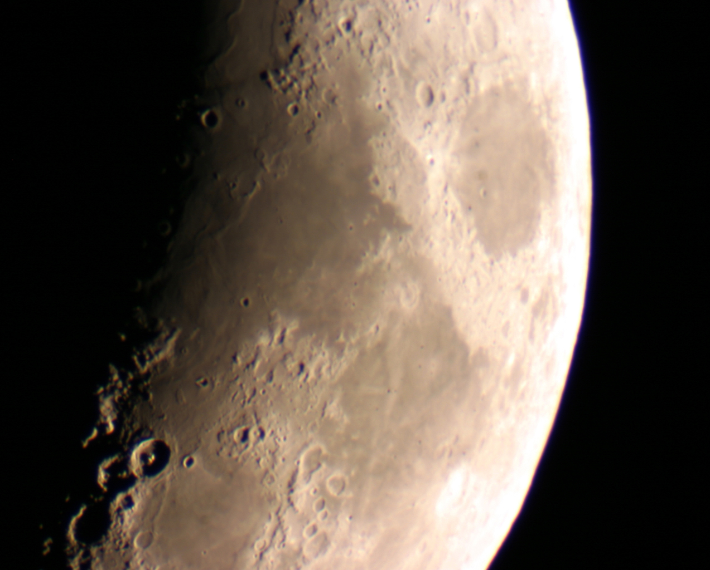
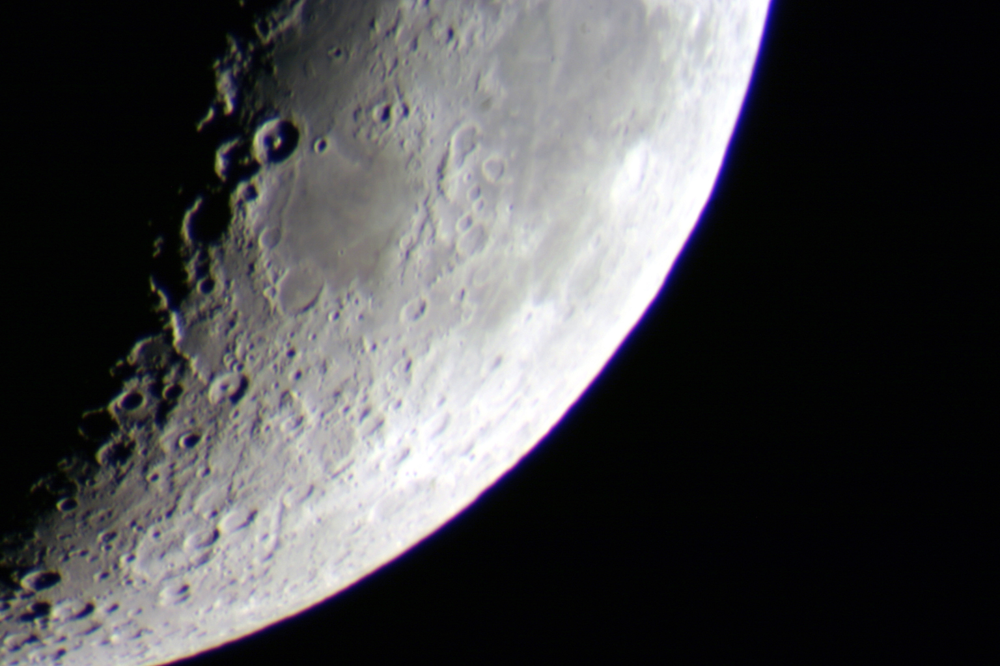
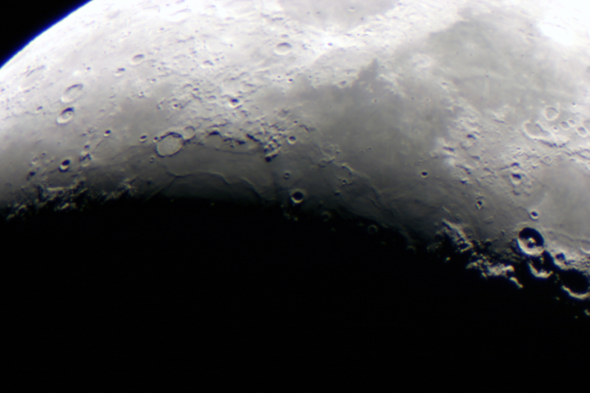
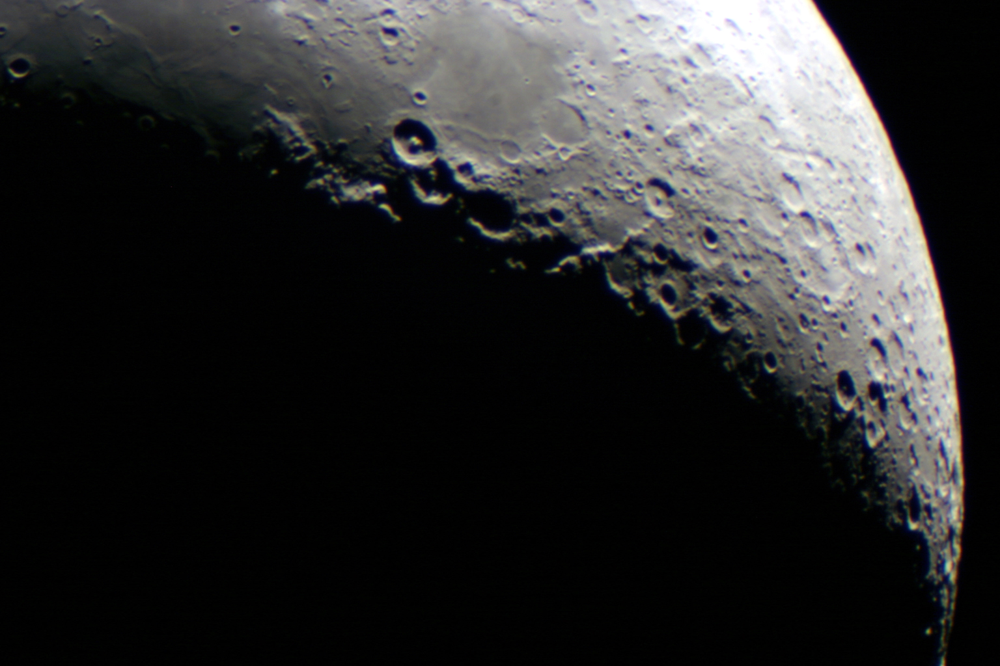

Lunar Photos
These pictures were taken by Mike Roman through our main telescope using his Canon 300D digital camera. They are all of essentially the same part of the moon; in particular, you can recognize a chain of three very prominent craters in all four images (the craters are near the lower left corner of the first image). The two overlapping craters are Theophilus and Cyrillus; the one a little farther apart is Catharina. The flat region just to the right (in the first and second images) of the three is Mare Nectaris, the Sea of Nectar. The large dark region in the center of the first image is none other than Mare Tranquilitatis, site of the first human landing on the moon. Mouse over the image to see the Apollo 11 landing site.
You might have noticed that the apparent edge (the limb) of the moon in these images has a red or blue colored band. This is not part of the moon! Instead, it's what astronomers call chromatic aberration. Any glass lens, including the ones used by our telescope, acts as a weak prism and splits light into different colors. Especially for bright, highly magnified objects, this manifests itself as colored bands like the ones you see here.
Some amateur telescope manufacturers offer achromatic or apochromatic refractors. These are telescopes that use several lens components stacked on top of each other to try to even out how light of different colors gets bent. They can't completely remove chromatic aberration, but a good apochromat comes close. The downside is that such complex optical elements are much more difficult to make well and are much more expensive for a given size than the simple lens used by our telescope.



